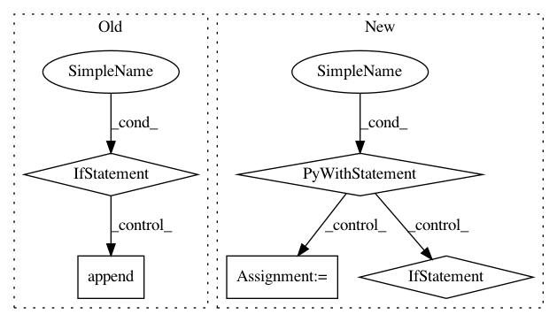

59c218f559388be1613f4bc6c29b5dd5cc79df9d,research/deeplab/train.py,,_train_deeplab_model,#Any#Any#Any#,334
Before Change
with tf.device("/cpu:0"):
grads_and_vars = _average_gradients(tower_grads)
if tower_summaries is not None:
summaries.append(tower_summaries)
// Modify the gradients for biases and last layer variables.
last_layers = model.get_extra_layer_scopes(
FLAGS.last_layers_contain_logits_only)
grad_mult = train_utils.get_model_gradient_multipliers(
last_layers, FLAGS.last_layer_gradient_multiplier)
After Change
quant_delay=FLAGS.quantize_delay_step)
for i in range(FLAGS.num_clones):
with tf.device("/gpu:%d" % i):
name_scope = ("clone_%d" % i) if i else ""
with tf.name_scope(name_scope) as scope:
grads = optimizer.compute_gradients(tower_losses[i])
tower_grads.append(grads)
with tf.device("/cpu:0"):
grads_and_vars = _average_gradients(tower_grads)
// Modify the gradients for biases and last layer variables.
In pattern: SUPERPATTERN
Frequency: 4
Non-data size: 5
Instances
Project Name: tensorflow/models
Commit Name: 59c218f559388be1613f4bc6c29b5dd5cc79df9d
Time: 2019-05-06
Author: YknZhu@users.noreply.github.com
File Name: research/deeplab/train.py
Class Name:
Method Name: _train_deeplab_model
Project Name: theislab/scanpy
Commit Name: 2765758171060d13058a1e36233a651e34299fc5
Time: 2017-04-30
Author: flying-sheep@web.de
File Name: setup.py
Class Name:
Method Name:
Project Name: pantsbuild/pants
Commit Name: b2202480258b6f2f5f4e020e86cde975088c7792
Time: 2015-07-11
Author: codyhgibb@gmail.com
File Name: src/python/pants/backend/jvm/tasks/jar_create.py
Class Name: JarCreate
Method Name: execute
Project Name: dataiku/dataiku-contrib
Commit Name: 59098111fa2734e6b43a1256d52a541ace78dc62
Time: 2019-10-17
Author: joachim.zentici@dataiku.com
File Name: sentiment-analysis/custom-recipes/sentiment-analysis-score/recipe.py
Class Name:
Method Name: